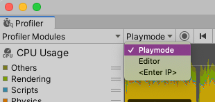
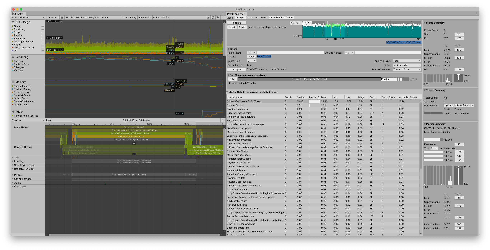

Collecting and viewing data¶
This workflow explains how to populate the Unity Profiler and Profile Analyzer with data. Note that the Profile Analyzer only analyzes CPU data from the Profiler.
Step 1: Open the Unity Profiler¶
Go to the menu: Window > Analysis > Profiler or press Ctrl+7 (Command+7 on macOS). If you have the Profile Analyzer window open, you can click the Open Profiler Window button.
Step 2: Populate the Profiler with data¶
To use the Profile Analyzer, you must populate it with data from the Profiler. To add data to the Profiler, you can either record some new data, or load a Profiler capture file in the .data file format.
a) Record new data¶
Click the Attach to Player dropdown at the top of the window (next to the Record button) and select a player to profile. By default this is set to Playmode. Click the Record button to start recording data. If you enabled Autoconnect to Profiler in the Build Settings, the Profiler automatically collects data when you start a built player.

The Attach To Player dropdown in the Profiler
For more information on how to record data in the Profiler, see the documentation on Profiling your application in the Unity User Manual.
b) Load data¶
To load a saved .data file, in the top right of the Profiler window, select the Load button.
Step 3: Pull the data into the Profile Analyzer window¶
Open the Profile Analyzer window (menu: Window > Analysis > Profile Analyzer) and then select the Pull Data button in the Frame Control pane. The Profile Analyzer then pulls in the data that is loaded in the Profiler window.
[!TIP] The Profiler window and the Profile Analyzer window require a lot of screen real-estate. Docking the two windows together in a single tabbed window lets you navigate between the two views quickly.

The Profiler and Profile Analyzer docked side by-side in one window
Step 4: Load and save Profile Analyzer data¶
To save the data from the Profile Analyzer, click the Save button in any view. Select where you would like to save your data, and then Unity saves the data in the .pdata format. To load this data, click the Load button in any view.
[!NOTE] When you load data into the Profile Analyzer, the data must be in the Profile Analyzer .pdata format. If you have data from the Profiler in the .data file format, open it in the Profiler first, and in the Profile Analyzer select the Pull Data button.